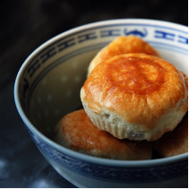
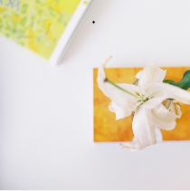
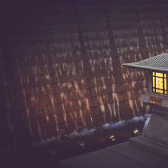
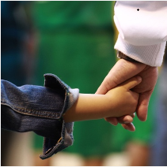
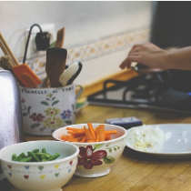
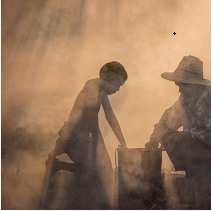
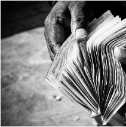

悦读 FM
登录
注册
悦读
情感
连播
校园
音乐
Labs

中秋
柏邦妮
森森
10:38
3589次
夏历八月十五日，正是「三秋恰半」，故名中秋。宋朝时的中秋节有赏月、赏桂、观潮、赏灯、吃月饼、饮酒赋诗等习俗。宋太宗时把中秋与新年、端午列为三大节日...

礼物
有鹿
甘乐
21:24
4389次
时光像连绵大雨一般一一剥去他在少年时代赠予我的辰光和只言片语，这些琐碎的物件在后来我颠沛的生活里再也无迹可寻...

故都长安
沈韶君
一泓
6:08
7589次
凡我住过的地方都是故乡...

昨夜西风过园林
若霏
雨夜书简
9:55
4914次
父亲的爱一如既往，只是面对瞬息万变般成长着的女儿，他的爱不再停留在细小的生活琐事上，而是变成了对女儿前途的关怀和忧虑...

活得比父母好，该不该有亏欠感？
吃饱了睡
刘春
9:18
3589次
有一天。 我发现，自己比父母吃得好，穿得好，用得好…… 我的心，猛然一疼。 因为，我小时候说过： 妈妈，爸爸，等我长大了，我要让你们过上更好的生活...

我告诉你我为什么爱钱
入江之鲸
刘春
8:38
2589次
这世上有多少爱钱的人，背后各藏着不为人知的故事。太多最苦最难的日子，都只是因为没有钱。因为贫穷，轻如鸿毛的灾难，都能轻易地将一个人击垮...

我告诉你我为什么爱钱
柏邦妮
森森
10:38
3589次
这世上有多少爱钱的人，背后各藏着不为人知的故事。太多最苦最难的日子，都只是因为没有钱。因为贫穷，轻如鸿毛的灾难，都能轻易地将一个人击垮...
一花一叶总关禅
白落梅
雨夜书简
13:38
2589次
浮世清欢，如梦无痕。厌倦了凡尘往来，所以更多的人愿意做一株平凡的植物，尽管微妙，却有着比人类更简单、更质朴的生存法则...
北方有盛宴
吴惠子
崔查德
21:10
6788次
小时候我信誓旦旦，要吃遍地球，可眼下，走到北京，已经是我能从家里走出来的最远的距离...
我告诉你我为什么爱钱
入江之鲸
刘春
8:38
2589次
这世上有多少爱钱的人，背后各藏着不为人知的故事。太多最苦最难的日子，都只是因为没有钱。因为贫穷，轻如鸿毛的灾难，都能轻易地将一个人击垮...
1
2
3
4
5
6
7
8
下一页
悦读频道 TOP 10
1.越努力，越幸运
文：卢思浩
主播：迁延
2.你若安好便是晴天
文：白落梅
主播：震云
3.我喜欢你，如此而已
文：没头脑也高兴
主播：不系之舟
4.也许，我们再也遇不到自己想象中的那个人了
文：安妮宝贝
主播：留声
5.假如还有来生
文：三毛
主播：震云
6.最美的徒劳无功
文：九把刀
主播：不系之舟
7.致前任男友&未来丈夫的信
文：不安小团
主播：丢丢
8.最怕是你永远也忘不掉
文：股名言
主播：丢丢
9.我们为什么没能好好在一起
文：作业本
主播：文涛
10.我希望有个如你一般的人
文：作业本
主播：文涛
捐
关于我们
|
加入我们
© 2010-2016 Yuedu.fm All rights reserved 粤ICP备14076392号